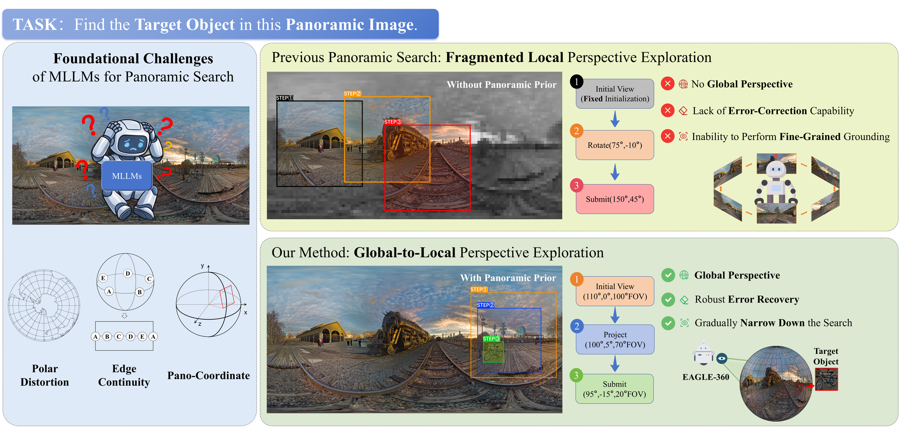
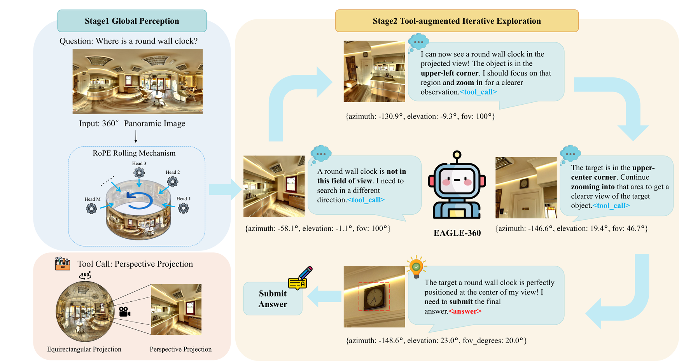

Global panoramic reasoning
The model receives the full ERP panorama and forms an initial spherical prior over likely target directions.
Embodied active visual search in panoramic worlds
Embodied Active Global-to-Local Exploration in 360°
Zhejiang University · Central China Normal University
Interactive task demo · 1 / 2
Move across the panorama to read azimuth and elevation. Hold the mouse button to call the 100° perspective projection tool; keep holding and drag to inspect other directions. Scroll while holding to zoom the FOV.
Target query: pink stool
Core idea
EAGLE-360 studies target object search in complete equirectangular panoramas. Rather than starting from a fixed narrow view, the model first reasons over the global 360° scene, then actively calls a projection tool to inspect local perspective views and refine the final azimuth and elevation.

Standard MLLMs struggle with polar distortion, seam continuity, and fragmented local exploration. EAGLE-360 uses the full panorama as a global prior, then narrows the search through active perspective projections.
Method
The model receives the full ERP panorama and forms an initial spherical prior over likely target directions.
It invokes a rotate-and-project tool to inspect perspective views with controllable azimuth, elevation, and FOV.
Through multi-turn refinement, EAGLE-360 outputs the final azimuth and elevation for the target object.

The pipeline combines panoramic Rolling RoPE, supervised fine-tuning, and GRPO to elicit tool-calling spatial reasoning over continuous 360° scenes.
Resources
The public repository contains the evaluator and panoramic model patches. The released Hugging Face dataset includes the public test split, and the model repository hosts the merged EAGLE-360 Qwen3-VL GRPO checkpoint.
Citation
@misc{xu2026eagle360,
title = {EAGLE-360: Embodied Active Global-to-Local Exploration in 360°},
author = {Xu, Jingtao and Lin, Zizhuo and Sun, Jianwen and Yang, Yi and Luo, Yawei},
year = {2026}
}